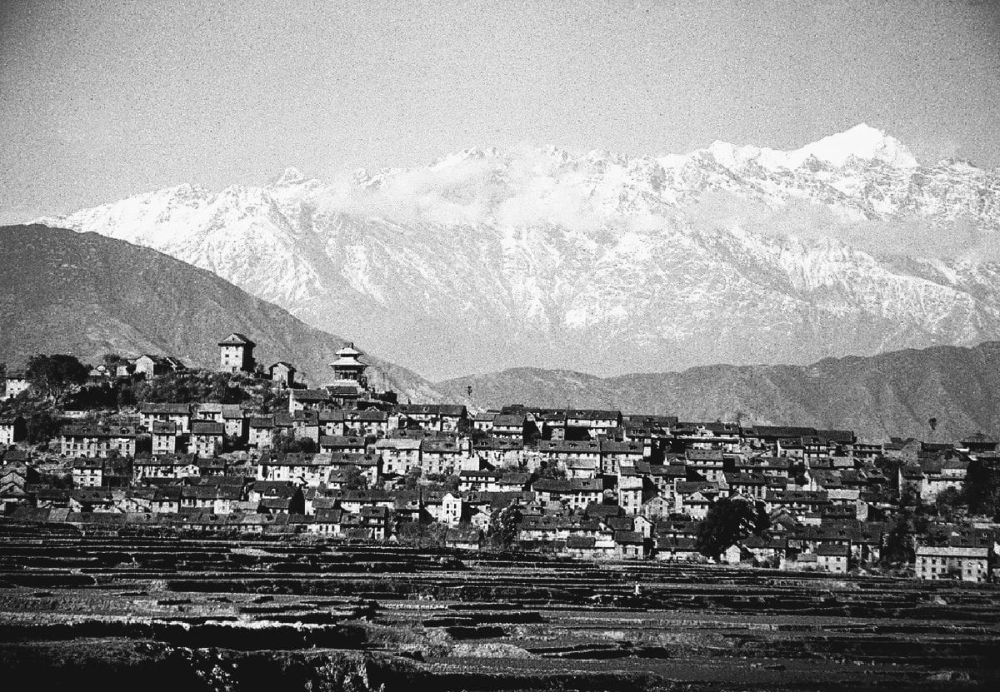
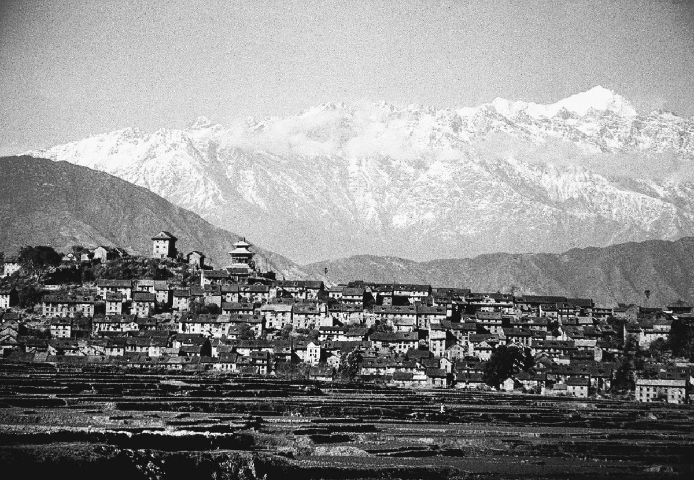

Historical
Peaceful
Nepal
E-Library
Peaceful
Nepal
E-Library
E-Library for the
Nepali Students
Kirtipur, an ancient city in Nepal, holds immense historical and cultural significance. Perched atop a hill southwest of Kathmandu, Kirtipur has long been a center of heritage, art, and resistance. The city is renowned for its well-preserved traditional Newar architecture, featuring intricately designed temples, stone-paved streets, and centuries-old houses that reflect its glorious past. Kirtipur has played a crucial role in Nepal’s history, notably as a stronghold during King Prithvi Narayan Shah’s unification campaign. Despite fierce resistance, the city eventually fell, yet its spirit and cultural identity have remained intact, preserving traditions that define its unique character. Kirtipur is a living museum of Nepalese heritage, where art, craftsmanship, and religious practices have been passed down for generations. The city is home to significant landmarks such as Bagh Bhairav Temple, Chilancho Stupa, and Uma Maheshwar Temple, each showcasing the artistic brilliance of Newar artisans. The presence of ancient monasteries and traditional courtyard settlements highlights the city's deep-rooted spiritual and communal life. Kirtipur’s narrow alleyways, lined with beautifully crafted windows and doors, add to its historic charm, offering a glimpse into Nepal’s architectural legacy.Beyond its architectural and historical significance, Kirtipur is known for its rich cultural traditions, vibrant festivals, and deep connection to Buddhism and Hinduism. Festivals such as Indra Jatra and Gai Jatra are celebrated with great enthusiasm, bringing the community together in colorful processions, music, and dance. The city is also famous for its culinary heritage, particularly the authentic Newar delicacies like yomari, chatamari, and bara, which attract food lovers from all over. With its rich history, artistic excellence, and cultural vibrancy, Kirtipur continues to stand as a proud symbol of Nepalese identity while embracing the changes of the modern era.


 
